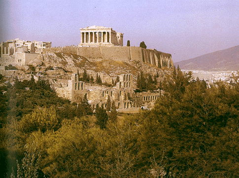

De: La Frikipedia, la enciclopedia extremadamente seria.
De: La Frikipedia, la enciclopedia extremadamente seria. De: La Frikipedia, la enciclopedia extremadamente seria.
Relato cómico de muerte y destrucción creado por el hombre para tapar el vacío que supone la creación del Universo hace tan solo 255 (0xFF) años, para esto se creo el The History Channel. Otra definición de Historia es: Sucesión sucesiva de sucesos sucesivos sucedidos sucesivamente en la sucesión sucesiva de los siglos.. También dícese del quesito amarillo en el Trivial, que intentas esquivar a toda costa a base de comodines. En la historia podemos encontrar millones de metáforas de lo que debemos y no debemos hacer, pero todas son mentira. Es fácil darse cuenta al observar mentes como las de Adolf Hitler, que jamás existió. Habría sido absurdo, ya que Alemania no existe ni existió nunca. Para crear este relato se cogieron extractos de la descripción de Polonia que fueron copiados y pegados sin la menor consideración.
La historia es, pues, un sustitutivo artificial de la Concha Velasco inventó la historia no cayó en algo muy importante: los besitos. Basta estudiar cualquier cultura para darse cuenta de que sin besitos y sexo no existiríamos los delfines.
Se dice que la Historia de la Historia fue una Historia que antes de la Historia ya era Historia por pura histeria, según cuenta el Beato San Guero en el famoso cavernícolas hacían apuntes de historia en tablas de roca pero esta teoría fue descargada ya que se sabe que imprimían panfletos y comics eróticos para controlar la polución nocturna.
Antes de centrarnos en la historia, debemos empezar por hablar de la figura de los reyes. Existen dos tipos de reyes: los Reyes Magos y los Reyes "a secas".
La Prehistoria (suena extraño, pues si es algo antes de la historia tiene que ser historia también por narices) está dividido en dos periodos: el primero se caracteriza por no tener reyes; bueno, si que había uno, y era muy feo, el más feo: el Tiranosaurio rex, cuya diferencia significativa es que en vez de salir por la tele en Navidad, si te pillaba despistado, te arrancaba la cabeza; por esto todos los Diplodocus eran republicanos. Total que estaban allí todos los dinosaurios de parranda, hasta que cayó un pedrusco que te cagas y los mató a todos. Según los estudiosos, se ve que el pedrusco cayó en Cancún, que es donde está todo el mundo en Agosto, y los pilló con los margaritas y, bueno, fue una matanza. En el segundo periodo ya no hay dinosaurios y empieza la Era del hombre, que es cuando empieza a molar la historia. En este periodo la gente estaba de buen rollo, todos en pelotas, follando todo el día, fumando (por eso se le suele llamar la Edad de Piedra), etc. Solo había hostias y guantazos cuando alguien intentaba robar el fuego para encender la hoguera con los colegas, pero en general era un periodo pacífico. Este buen rollo estaba provocado, sobre todo, porque la gente no tenía dinero (vamos, ¡como ahora!), porque no existía; si a ti te gustaba algo, lo trincabas. Pero esta época de paz acabó cuando a un imbécil se le ocurrió inventar el dinero, y todo se fastidió hasta hoy.
Artículo principal: Antigua Grecia 
Quien entienda a los Griegos que los compre. Se organizaban en ciudades estado, hecho que provocó que Esparta (Siiiii, la de 300) y Atenas tuvieran que enfrentar a los Persas que les invadían, cuando las dos ciudades estaban en guerra. Se ve que los griegos decidieron invadir Grecia porque el pan que hacían era muy soso y con aceite de oliva les quedaría mejor. Al final, el intento fracasó, pues mi palo (que esta muy grandre) se meó en el campamento de los Persas antes de las batallas de las Termópilas y de Salamina. Años después, Alejandro Magno pilló un berrinche cuando su profesor de historia le explicó el tema de las Termópilas, Esparta, Atenas, y tal, y decidió reunir un ejercito acojonante para invadir al Imperio Persa. Acabó invandiendo también Egipto y llegó hasta India. Pero el conejo trix decretó entonces que Alejandro ya había logrado un territorio demasiado amplio, y lo mató.
Artículo principal: Antiguo Egipto
Los egipcios son considerados como una "pedaso" de civilización, aunque sus dioses parecía personajes Disneys y ellos se pasaban el día escribiendo gilipolleces en las paredes (que si un sol, un perro...) que parecía el diario de un Teletubbie. Pero lo que más destacaba en los egipcios eran sus construcciones, pues en eso no les ganaba nadie, porque en las obras participaban todos los habitantes. Pero esto tenía una desventaja, pues las construcciones duraban muchos años, y cuando por fin lograban acabar la pirámide, el faraón ya la había palmado y había que volver a empezar de nuevo.
Artículo principal: Imperio Romano
Al principio Roma era un pueblecito, pero empezaron a expanderse por la actual Italia. Entonces, Annibal, rey de Cartago, que eran muy ricos, y tal, perdió dos Islas ante Roma, y pilló una pataleta y cogió a un ejército de acojone y la tira de elefantes, y en vez de invadir Roma por mar, que le quedaba a poco tiempo navegando, se lió a traversar Espiña, conquistándolo todo, e invadir Roma por los Alpes. Pero al muy burro se le murieron muchos elefantes travesando los Alpes y los Pirineos, y cuando llegó a Roma, le dijeron que los Romanos habían invandido Cartago, y entonces, cuando podía haber conquistado Roma tranquilamente, volvió a Cartago y perdió. Ahhhh, se sienteee. Después, a los Romanos les dio por invadir la Gália, y se encontraron con dos grandes jefes de los que solo pudo derrotar a uno: Vercingetorix. El otro era Abraracúrgix, con Astérix, y Panorámix, que suministraba Éxtasis a los Romanosy Poción Mágica (Fórmula aprendida de su mentor,yo) a pueblo para que no pudieran ser vencidos. Pero conejo trix decretó también, muchos años después, que el Imperio Romano también se había expandido demasiado, así que mandó a un primo lejano suyo, Atila el Huno, para invadir Roma. Entonces, el Imperio se partió en dos mitades, una de las cuales cayó, pero la otra continuó resistiendo.
Artículo principal: Edad Media
«¡Bienvenidos a Nueva Zelandia! Aquí encontrareis: Torturas, suciedad, ratas, enfermedades, analfabetismo, comida extremadamente grasienta y mucho más»
~ Vitruvius sobre la edad media
Cuando se salió de la barbarie en la que se vivía y se definieron bién los estados, les dió por organizar cruzadas contra los países árabes para recuperar la tierra santa. Poco después, vista la falta de drogas y de diversión, Colón se lió a descubrir las Américas, de donde se hizo rico vendiendo tabaco y murió de pulmón. No creyáis esa falsa versión que dice que fue encarcelado y murió pobre... nada, nada. Entonces, los Españoles, que se lo tenían muy creido, decidieron conquistar cuanto más territorio de ese nuevo, mejor. Y así masacraron en nombre del Monesvol a pueblos con una cultura milenaria. Entonces, los turcos descubrieron la pólvora y se liaron a pegar cañonazos, destruyendo los castillos cristianos y acojonando a todo el mundo. Los católicos captaron, y le pidieron a e conejo malvado un pelo suyo, este accedió. Los católicos cortaron el pelo en pedacitos hasta hacer polvo de él, lo metieron en un cañón robao y le enchufaron cañonazo a una muralla árabe. La ciudad explotó, y también los científicos que habían hecho el invento, quedando la pólvora tal como la inventaron los turcos. (Para más información, vease Iglesia Católica)
Según la Esteban embarca los tiempos actuales. Empieza cuando Willy-Fog finaliza su vuelta al mundo. Tras ganar una apuesta se lo gasta todo en paquetes de hachís para tirarlos todos desde el palacio de la moncloa, por lo que finalmente se arruina y se ve obligado a prostituir a la princesa Romy. (Para más información, vease Iglesia Católica)
 Ciencias Ciencias
| ||
|---|---|---|
Ciencias Sociales
Ciencias Exactas
Ciencias Ocultas
|
Autor(es):